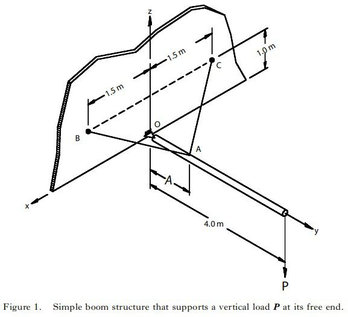
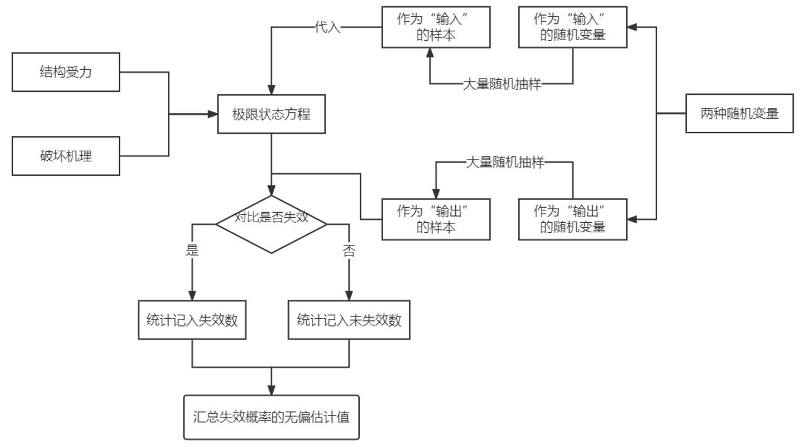
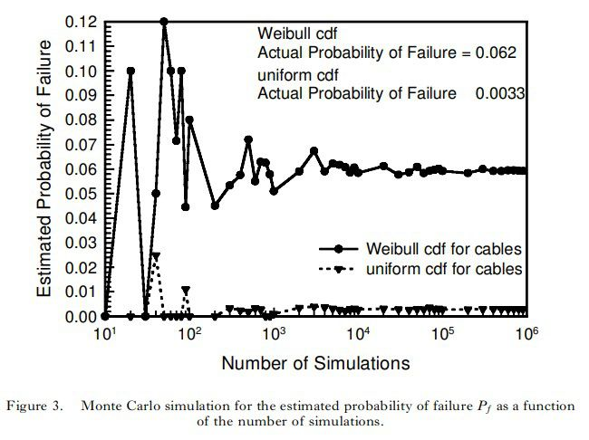
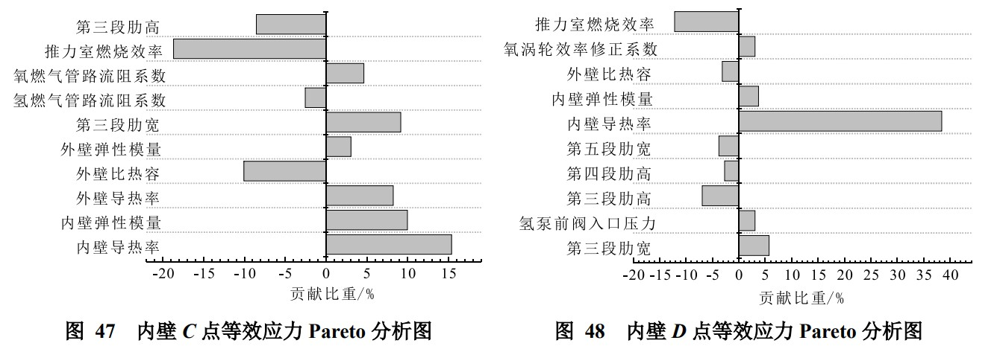

蒙特卡洛方法/灵敏度分析
蒙特卡洛方法10.26
[1] Laumakis P J, Harlow G. Structural reliability and Monte Carlo simulation[J]. International Journal of Mathematical Education, 2010, May 01(3): 377-387
[2] 王哲君, 强洪夫, 常新龙, 等. 结构可靠性仿真方法研究[J]. 力学与实践, 2014, 36(1):9-22
原文链接:
[1] http://dx.doi.org/10.1080/00207390210125729
[2] DOI: 10.6052/1000-0879-13-117: http://lxsj.cstam.org.cn/CN/Y2014/V36/I1/9
蒙特卡洛 (Monte-Carlo, MC) 法亦称为概率模拟法，有时也称为随机抽样技术或统计试验方法。 它是一种通过随机变量的统计试验、随机模拟来求解数学物理、工程技术问题近似解的数值方法。 也是最直观、精确、对高度非线性问题最有效的结构可靠性分析方法。
基本MC法
(1)MC 法的理论基础是大数定律。即求解某事件发生的概率时，可通过大量抽样试验的方法，得到该事件出现的频率，将其作为问题的解。
(2) 基本思想：按设计变量的概率密度函数进行大量抽样，用落入失效域的样本点数与总投点数之比作为失效概率的无偏估计值。
(3) 实施步骤：首先根据结构受力、破坏机理，建立极限状态方程；其次对影响可靠度的随机变量进行大量随机样本抽样；然后把这些抽样值一组组地带入极限状态方程，确定失效与否；最后通过统计的方法，依据该方法的基本思想得到失效概率的无偏估计值。
改进MC法
基本 MC 法，通常采用大量投点来提高精度，减小方差。 在失效概率非常小的时候，随机变量落入失效域的几率很小，抽样效率很低，计算量很大。为此需要对基本MC法进行改进，以提高工作效率，尽可能地减少必需的样本量。
优点分析：
通过分析和研究发现，MC 法作为结构可靠性仿真的基本方法，具有非常明显的优点：
(1) MC 法及其程序结构简单，较容易实现；
(2) 只要抽样次数足够多，计算所得的结构可靠度的精度就可满足要求；
(3) 收敛的概率和收敛的速度与基本随机向量的维数、极限状态函数的复杂程度和仿真计算过程无关，无需将状态函数线性化和随机变量当量正态；
(4) 数值模拟的误差也可容易地确定，从而确定模拟的次数和精度。
MC 法是进行结构可靠性仿真的最基本方法，其他仿真计算方法都是以该法为基础，都是针对该方法在计算中出现的问题而提出的。 如何对失效概率较小的结构进行可靠性仿真计算是其面临的主要问题，也是对其进行改进的主要方向。 因此，为在结构可靠性仿真计算中发挥该方法更大的作用，基于控制变数法、等分散抽样法以及支持向量法等新抽样方法仍在不断涌现和发展。 由于 MC 法自身的特点，目前针对特别复杂结构的可靠性分析，一般将基本 MC 法作为检验各种改进方法和新方法有效性的重要手段。
具体操作方法：以一简单吊臂结构为例


从下图中可以看出，随着抽样数目的不断增大，失效概率逐渐偏向一个稳定值，这背后是符合大数定律的。另一方面，图中两根图线分别对某一随机变量的概率分布函数处理为均匀分布和威布尔分布，这种分布的不同很大程度上会影响最终结果。

灵敏度分析10.27
[1] 杨哲,李曙林,周莉,石晓朋.飞机作战生存力设计参数灵敏度分析[J].北京航空航天大学学报,2013,39(08):1096-1101+1121.DOI:10.13700/j.bh.1001-5965.2013.08.023.
[2] WILKINSON L. Revising the Pareto chart[J]. The American Statistician, 2006, 60(4):332-334.
原文链接:
[1] https://kns.cnki.net/kcms/detail/detail.aspx?dbcode=CJFD&dbname=CJFD2013&filename=BJHK201308020&uniplatform=NZKPT&v=bXj07oiIO7hhXy10_uz0HR2cw8PKNCn5rIYECrzQYn3iRFbWZTrj70DZcZ2AoC9F
[2] DOI: 10.1198/000313006X152243: https://www.tandfonline.com/doi/abs/10.1198/000313006X152243
灵敏度是度量一种因子的变化对另一因子的影响程度，定义方法一般有两种，一种是用模型因变量对模型输入参数的偏导数来表示，即
式中， 为因变量y(X)对参数 的灵敏度，l为模型中参数的个数。
另一种是下式所示的采用灵敏度的标准化无量纲形式：
式（1）为因变量的绝对差值和输入参数绝对差值的比值，其值相当于因变量与输入参数构成的曲线的绝对斜率，适用于比较同一个参数在不同取值时对因变量的影响大小; 公式（2）为因变量输出变化百分比与输入参数变化百分比的比值，其值相当于曲线单位标准化之后的转换斜率，由于为无量纲，因此适用于比较不同参数对因变量的影响大小。
真实计算中，如果无法求因变量关于某一参数的显示灵敏度函数，可以对某一特定参数 取一个微小增量 ，然后用下式近似求解。
通过灵敏度分析，容易确定对目标因变量影响更大的设计参数，设计优化的重点也将放在这个上面。对于多参数敏感性分析，也可以用下面的公式来比较大小。
另外，设计参数的取值范围对优化过程和优化结果影响很大。设计参数取值范围过大，则优化效率降低; 若设计参数取值范围过小，则可能造成搜索不到最优解。因此，文献[1]中首先利用公式（3）确定每个参数在一个较大取值范围内的灵敏度，然后选择灵敏度较大的区域作为该优化参数的初始取值范围，进而建立生存力权衡优化设计模型，并 基 于 粒 子 群 优 化 算 法 ( PSO，Particle Swarm Optimization)对其进行优化求解，得出最优设计方案。
Pareto图在表示批量数据随机抽样的结果上有很好的展示效果。在实践中，针对一组离散因素收集故障频率数据，一般会对这些频率进行分类，并首先解决与最大频率相关的问题。将多参数灵敏度分析的结果用Pareto图进行展示，是比较流行的做法。
